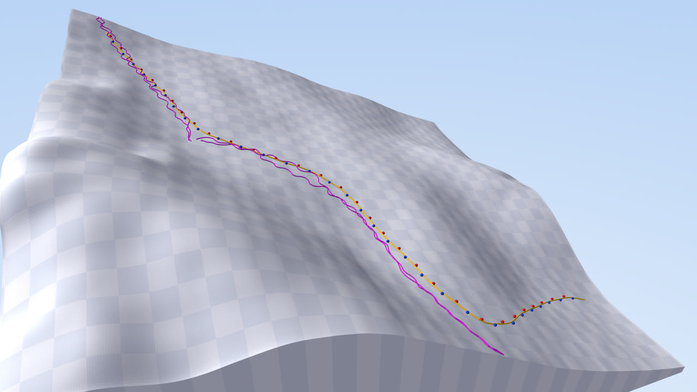
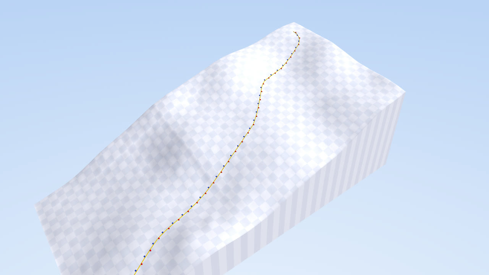
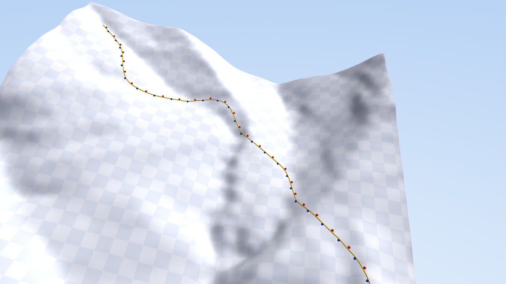

Six drawings: the robot's brain, the physics it practices in, how it learns from data, the database every piece runs through, how it all connects to a real robot, and how a hike on your phone becomes joint angles.
NVIDIA's SONIC is the foundation: it already moves a Unitree G1 like a person. Our policy sits on top. It reads the shape of the ground ahead in the robot's own frame and nudges SONIC to lean and edge on snow, or place its feet on a rocky trail. We assume capable vision and hand it the ground as numbers.
Type a place. Its trails and slopes come from OpenStreetMap, its shape from elevation data, and the two are stitched into a world a robot can stand on, with snow that grips and slides like snow.



Thousands of robots practice at once on rebuilt ground. Every checkpoint takes the same exam. Where they still fall is the ground we need more human motion on, so the policy is only as good as the data behind it.
There is no game server. Every skier, run, cheer and motion sample is a row in SpacetimeDB, written through reducers. The game, the live map and the iMessage agent are all just subscriptions to those tables, and the dataset is the same rows.
Phones, webcams and videos write to SpacetimeDB. The same training job runs on AWS GPUs or Modal, and the policy API serves the result. A robot pulls a policy once and runs it locally at 50 Hz, with no network in the control loop.
Photon texts you on iMessage. Say yes and the Ground Truth app records motion at 100 Hz, GPS every second, the barometer and your steps until you leave. The phone server checks the track against the trail under it and writes it to SpacetimeDB in one standard shape. On the same trail, rebuilt from 1 m lidar, NVIDIA's SONIC walks a G1, and every frame comes out as the same 36 numbers: where the robot is, which way it faces, and 29 joint angles.